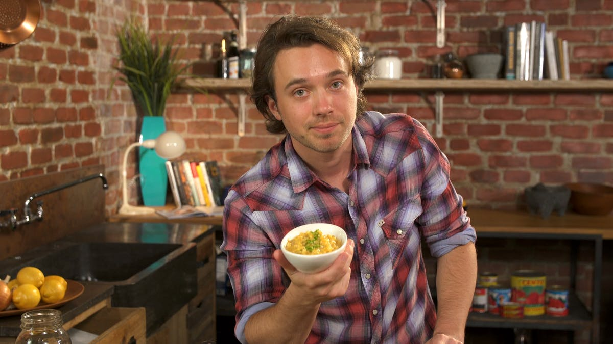

Voter Power User
Persona

- Name: Steven Lucero
- Age: 25
- Gender: Male
- Occupation: Amateur YouTuber
- Devices:
- mobile- Samsung Galaxy Note 10 Plus
- laptop- Microsoft Surface Laptop 3
- camera- Canon EOS 80D, GoPro Hero 8
- tablet- Microsoft Surface Go 2
- Attitudes: Aspiring YouTuber. Has worked various restaurant jobs since culinary school.
Favorite food to make and eat is mac and cheese. Regularly uploads pictures of his home cooked creations to
his various social media profiles. Looking for new platforms to attract followers.
- Needs:
- Ability to upload multiple photos of his food
- A secure platform protected from the trolls of the internet
- A competitive style showcase to show how his food stands out
User Story
As a power voter user, I want to upload and vote on multiple photos.
Use Case
Steven is trying his hand at something new: being a person on the internet. Not just any person, but the next
YouTube Chef Sensation! Being trained in a commercial kitchen already, he knew this was something he could
dominate. His specialty: Mac and Cheese. His social media profiles are doing okay but he wants that competitive
feeling he had with the staff at the various restaurants he worked before. Steven discovers That's What Cheese
Said, a website dedicated to ranking Mac and Cheese dishes from restaurants in the area and from user submissions.
After submitting a few votes, Steven knows this is exactly what he was looking for!
Interaction Flow
PreCondition: Steven is on the homepage of That's What Cheese Said
PostCondition: Steven has successfully submitted and voted on the first of many mac photos
- Steven clicks on "create account"
- Site loads empty username and password fields for user to complete
- Steven selects username and password
- Site redirects user to homepage logged in
- Steven clicks submit mac photo
- Site loads empty file selection field
- Steven selects most recent Mac and Cheese photo and clicks submit
- Site loads Steven's photo into pool of photos for users to vote
- Steven now begins voting on user's mac and cheese photos, clicking on the most attractive out of 2 randomly
given photos of mac and cheese
- Site tallys vote and presents 2 more random user submitted photos
- Steven makes note to regularly upload/vote on photos and let the votes tally up, hoping to be in the Top 5 ASAP